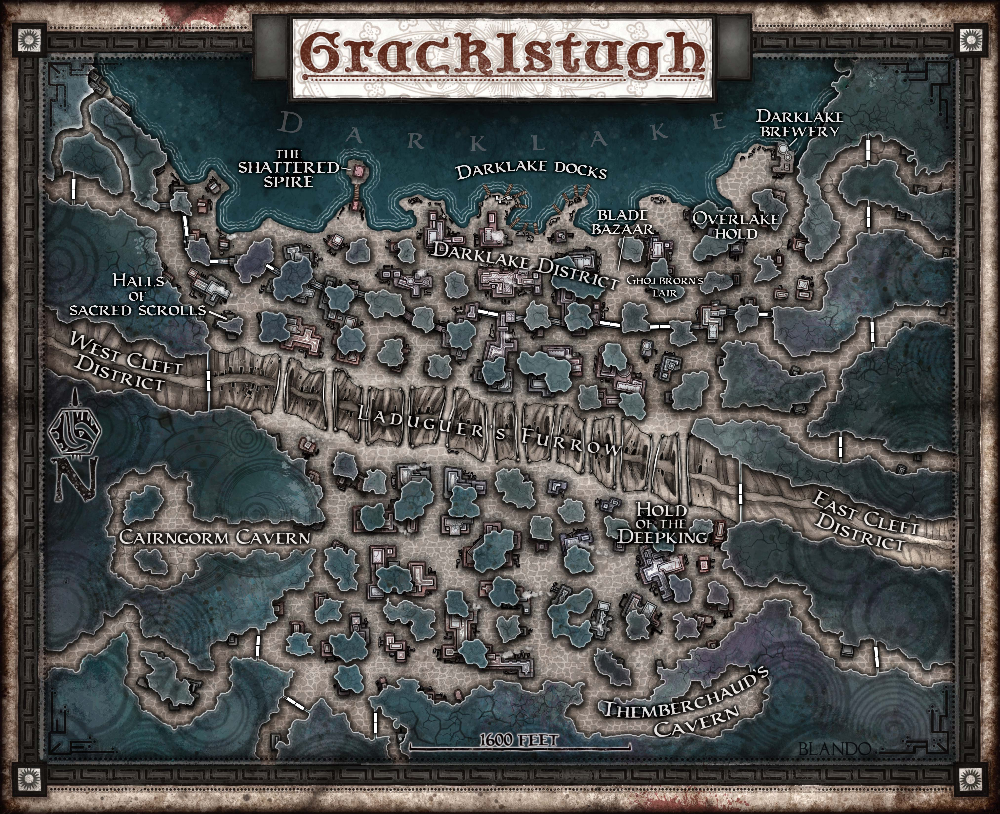
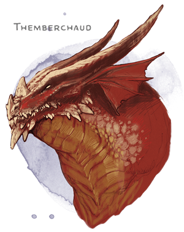

Twenty-Third Session
Knives in the Underdark
Dramatis Personae
- Benjamin, a 12th-level Wood Elf Ranger
- Calmul Rhoqiroth, an 11th-level Dragonborn Artificer
- CoralKing, an 11th-level Gnome Monk
- Geral Bryn, an 11th-level Human Fighter
- Orky, an 11th-level Half-Elf Paladin
- Wulrif, a 10th-level Human Warlock
Summerday +1012 hours

From the journal of Dame Orky
After our fight we are in the cave and the sphere of darkness continuing Droki has dissipated. We go back through the West Cleft District gates to Gholbrorn's Lair, the tavern under the docks. We take a long rest and Geral gives an inspiring speech. The innkeeper is a Duergar and speaks Common. Geral asks if he has any surface food such as eggs. The innkeeper chuckles and said yes, for a price. He also has bacon. Geral orders eggs and bacon. We eat while Geral asks him if he knows anything about Droki’s whereabouts. He responds just that he lives in the West Cleft District. We decide to head back to the West Cleft District and time our arrival so that the new guard shift is on.
We hear a mob approaching us on our path. Wulrif tries to Detect Thoughts. He sends his familiar 60 feet in the air to get a better view. They seem angry and insane. I cast Daylight in the center of our group. Wulrif fails to pick up thinking creatures not seen by us. Eventually, the mob moves around us and onward. We continue. Geral asks whats going on. The guard responds that they’ll be put down soon. Then we hear a slaughter. We go through the gate and Calmul notes Cannons on every tower that swivel in any direction.
As we approach the gate, Geral asks if they saw the Derro come by here. He said they don't let groups more than 5 through at a time. Wulrif asks if they saw Droki. He said if they had seen him, he would be arrested or dead. Wulrif tells the guard Droki is a magic user and that we are going to be operating in this region to find him. The guard understands.
- Group 1 - CoralKing and Wulrif
- Group 2 - Me, Geral, Calmul, Wulrif’s Familiar, and Benjamin
Group 2 staggers ourselves 10 ft apart inside the city gate (leading away from the gate), about 40 ft away from the gate.
Group 1 walks outside of the gate and we all wait. We don’t see him go by for a full cycle. We regroup back at the inn, rest, and Geral asks if he has seen any strange happenings at all recently. He responds yes that he kicked some people out yesterday that were saying strange things. He said he doesn’t pay much attention though.
We decide to go to the Overlake Hold and interrogate the prisoners. We ask to question them. We are led to them and we see some Orcs, Gnomes, and Dwarves. None of them are doing anything odd. Geral questions the Gnomes and asks them what happened last cycle. They said “You've heard it too?” and he replies “I’ve seen it and what it does to people.” They say "Oh, you have the gift too?” and they start discussing a lady. He seems to be following the desire of a female presence. She comes in his dreams and he sees her every night since he “accepted her.” and he drones on about her for some time.
Wulrif takes over and feels a presence in his mind. He feels warm, light, and wonderful. He feels like he’s about to be blessed if he accepts it. Wulrif rejects it and is kicked out.
CoralKing takes over and questions the Gnomes. He questions them and he said they got mad. Wulrif checks the Dwarves and we get the same thing.
Geral questions the Orcs and asks how long they have been down there. He asks if they got invitations to join a woman in some blissful…and they respond in a weird face before he finishes his sentence. They just seem to be interested in violence, in the spirit of violence. They said they don’t deserve to be down here because they killed a couple of Dwarves. They claim to have not started the fight and were defending themselves from stupidity. They seem to know about the corruption and want us to put in a good word for them to be removed from prison because they were fighting the corruption.
We go to the main office of the Duergar Captain and explain what happened with Droki and the Balor. She said it doesn’t sound like him if he is creating a dark spell. We explain about the Orcs in the prison and they offer to have The Keepers of the Flame interrogate them.
Geral asks if they have anything to capture a magic user because of the magic dampening properties of the city. She suggests we consult The Keepers of the Flame, which Geral is hesitant to do. So, he asks if she suggests a specific contact within the Keepers. She said Gartokkar would probably speak with us. We ask where to find them and she said the Wyrmsmith’s Chambers.
We head there and look for Gartokkar and we hear a bizarre language none of us speak. Their minds are also closed to Wulrif.
As the Duergar priests lead you to a building carved from the stone just outside a huge cave entrance, the ground trembles slightly, and a thunderous voice echoes against every wall.
“Gartokkar,” the voice calls as a reptilian behemoth comes into view, it scales the color of lava, its bright yellow eyes glowing in the shadows of the cave before coming into the light. “You didn’t say I was having surfacers for dinner today.”
The Dragon chuckles at his own wit. His massive body gives the distinct impression that he is overweight, indicating eating habits that don’t bode well.
“Foreigners,” the Duergar priest says with great reverence, “meet the Father of Flame, the Everburning, and the Foundry’s Heart — Themberchaud, the Wyrmsmith of Gracklstugh.”

He waddles onto this massive pile of coins and we follow him.
“Now leave us. Anyone invisible will be burned to a crisp.”
The Duergar priest reluctantly backs out. Themberchaud said he needs us to find out what issues are occurring among his staff. He said he knows of Geral and Phandalin. We explain how we got here and that we are just trying to get out. We explain that we are currently working on hunting down Droki and the spreading corruption. He asks more about the issue with Droki. He said he recognizes the description of the female as Zuggtmoy, the Queen of Fungi, and that she spreads her word via the Myconids. He tells us he has never heard of her spreading to mammals and especially Fey. He tells us to go to the Captain with his information.
He turns to Wulrif who feels an extremely strong mind connect with him to ask why we are here. Wulrif replies, explaining about the Koa-Toa summoning Demogorgon. Themberchaud is very interested about the Stone Giant that attacked us in the city. He telepathically enters my mind and interrogates me about what I’ve seen. I explain about the Smiling One who summoned the Purple Worm and how we ended up falling down his hole. Themberchaud tells me we should find the name of the Smiling One and deliver it to him as their kind have been quarreling since before Paladins existed. I then explain about the encounter with the Stone Giant and he keeps asking about his hands. I don’t remember anything particular about his hands.
Themberchaud says his Keepers are hiding something from him and he wants us to figure out what it is. He says his Right Hand will give us gold badges. One of them gives me an unholy fragment of an elder god's symbol and tells me I will find it useful. They warn me I alone can neutralize it -- any others will be corrupted. They say the god was called Laduguer as in Laduguer’s Furrow, that splits the city in twain.
We told Gartokkar that we are searching for something they are hiding. He denies it and said he serves his master faithfully. Something seems to glow in his hands as he tells us not to cross him or his type again.
Geral asks if he knows anything about the corruption going around lately. Gartokkar replies the Prince of Demons has been seen, the servants of Zuggtmoy have been more active, and she seems to have crossed the blood-brain barrier into more species. We ask about Droki and Gartokkar says he seems to be a minor spy, but a large problem for them. We mention Droki summoned a Balor and uses magic. He says Droki has taken something very valuable from The Keepers of the Flame and they are desperate to return it. He finally admits Droki took a Dragon’s egg. We ask if he knew that Themberchaud was missing an egg and he reminds us that Themberchaud doesn’t lay eggs. We discern that Themberchaud isn’t aware that his egg has gone missing. The Gray Ghosts are named as the culprits. They have been tracking Droki and we ask for any leads they have. He thinks Droki is a Drow. He thinks he has been using tunnels underneath the docks that are guarded by some things that are killing his scouts and infecting any others with Zuggtmoy’s mind spores. He says we can probably survive The Whorlstone Tunnels as we have a Paladin and a Druid.
Geral explains that we will go there and attempt to retrieve the egg and ask for any map they have. Gartokkar said it’s controlled by the Maze Lord and they don’t have any tools for us. He mentioned about Shadowblades, the feared line of Drow House Assassins.
We head back to the Captain of the Stone Guard and relay what we learned. She said the Zuggtmoy are annoyed by light, but won’t cower away from it.
We agree to head to The Whorlstone Tunnels.